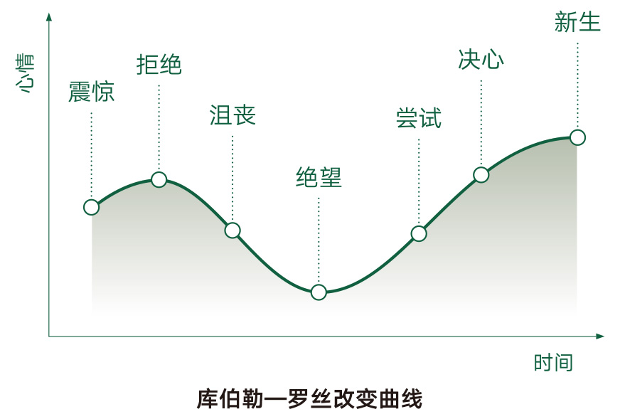

几乎所有的人，冲进交易市场的时候，都自然而然地犯下一个错误：一进场就买买买。之前的解释是，之所以犯下这个错误很自然，因为他们是在牛市尾巴里冲进市场的。
更深层次的原因是什么呢？更深层次的原因是，这些人（包括当年的我）在冲进交易市场的时候，脑子里就没有“周期”这个概念。如果交易者脑子里有这个概念，了解这个概念，擅长应用这个概念，那他就不大可能把交易当作零和游戏了，不是吗？
以后你仔细观察一下就知道了，韭菜们只喜欢谈趋势，而周期是他们脑子里根本不存在的概念。他们顶多会说：
这种描述尽管有时候还算管用，但更多的时候却是肤浅的、危险的，因为一个上升趋势要加上一个下降趋势才构成一个完整的周期。而实际上，真正的趋势常常需要在多个周期（至少2个）之后才能真实展现。
如果我们探究的是真正的趋势，就会发现，上升与下降只不过是一个真理的表象——现实的经济里没有直线，只有波（动）。
在一个很长的波段中，从任何一个点前后望，看起来都像自己身处在一条直线而不是曲线上，就好像我们站在地球上却很难感知我们自己其实是站在球面上而不是平面上一样。
一个上升与一个下降构成一个周期。两个或多个周期之后，如果我们发现曲线就好像是数学课本里的sin曲线的话，那么所谓的“趋势”实际上就是一条水平线而已，而我们常常说的且在寻找的所谓“趋势”应该是个要么上升、要么下降的线条才对，因为“水平”等于“无变化”，无变化就无趋势。
这就解释了为什么有些人认定的所谓的趋势在另外一些人眼里根本谈不上是趋势，因为后者重视的是一个以上的周期之后所显现的真正的趋势。这也解释了为什么“跟涨杀跌”的人必然吃亏，因为他们所看到的并不是实际的趋势，他们看到的和把握的只不过是幻象而已。
这里有个重点，以及有趣的现象：
所有的韭菜都骨子里认为自己正在交易的标的并非可以持续长期增长的……
所以他们才“快进快出”，所以他们才根本无法长期持有，所以他们才“绝对没有办法降低交易频率”……虽然冲动的时候他们甚至会用“终身事业”之类的词修饰自己正在干的事情，但，骨子里他们就是不信该标的的长期增长。
问题在于，你正在交易的，如果你不确定是一个可以长期增长的东西的话，你在干吗呢？好奇怪！
话说回来，关注周期，以及多个周期背后显现出来的真正趋势，会给你一个全新且更为可靠的世界和视界。
“……我要是能在熊市底部建仓，而后在牛市顶部逃顶就好了……”——又来了，你的脑子里闪过的这个念头，说明你还是个不成熟的小孩子。
可说实话，理论上来讲，这也是一个有志向的新手最终应该学会的技能。但，志向不能这么小吧？因为你想的只不过是“把握一次牛熊”，而不是“穿越多次牛熊”……巴菲特老爷子怎么说的？“我喜欢的周期是永远……”这句话里的“周期”指的不是我们正在讨论的周期的含义，但，他喜欢永远，为什么？因为走到一定程度之时，你能赚到的钱已经超出了你的消费能力，所以，剩下的那些，拿着一年还是拿着两年，还是拿着永远，有什么区别呢？
如何把握周期呢？有很多种理论，最终，在我眼里只有一个东西简单靠谱容易上手不太可能出错：仔细观察体会绝大多数交易者的情绪。牛市里，FOMO情绪达到顶峰，各种投资者开始ALL-IN的时候，上升趋势渐渐到头了；熊市里，大多数“韭菜”经过失望谩骂而后竟然平静了的时候，下跌趋势渐渐到底了……
有两个著名的图表，可以帮助你理解得更为深刻。一个是“库伯勒—罗丝改变曲线”（Kübler-Ross change curve），一个是“新生事物的发展过程”（Transition Curve）。

如果，你尚未冲入交易市场，却意外先读到了这本小册子，甚至已经读到这最后一节，你猜，你会不会避开那个第二节里提到的“几乎所有人都犯下的错误”？
我猜，你还是有3/4的概率犯错。
为什么呢？因为你对周期的判断有一半可能出错，然后，你控制自己的能力有一半的可能不及格，于是，你胜出的概率大抵上也就只有1/4而已。
控制自己是天下最难的事情。以后你会知道的，当你反思自己行为的时候，你最难过的是想到那些“你自己明明知道应该怎么做却事实上没那么做”的情节。越是简单的原理越是难以遵守，就是这个原因。而当你意识到自己没控制好自己的时候，你甚至很难想象究竟是什么原因造成了那样的情况。我也经常感觉莫名其妙——最后找到的解决方法也很含混：增加独处的时间，增加自我责怪的时间，让自己更难受一会儿，希望能记住那个痛苦，希望如此这般能够避免下一次做出同样的傻事……